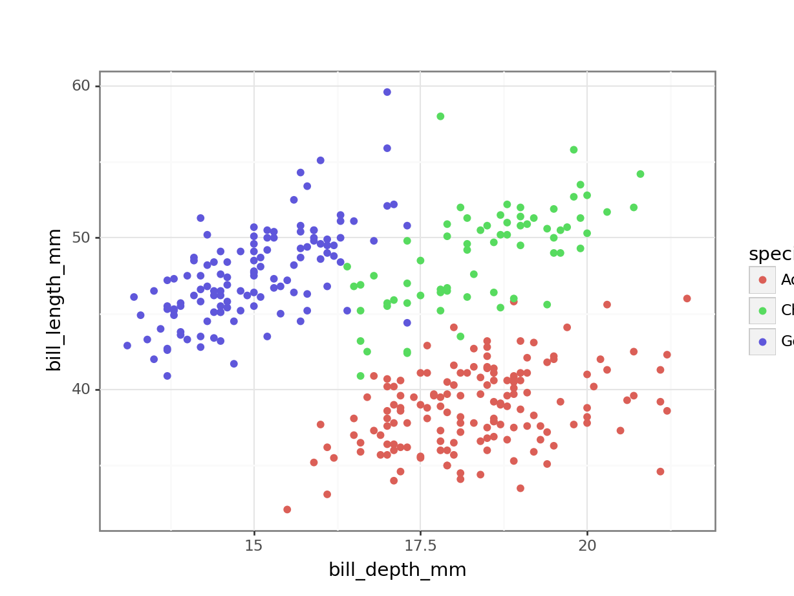
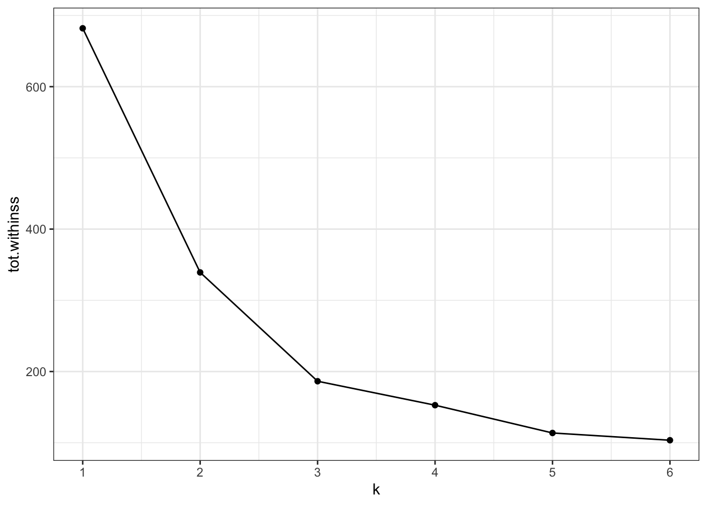
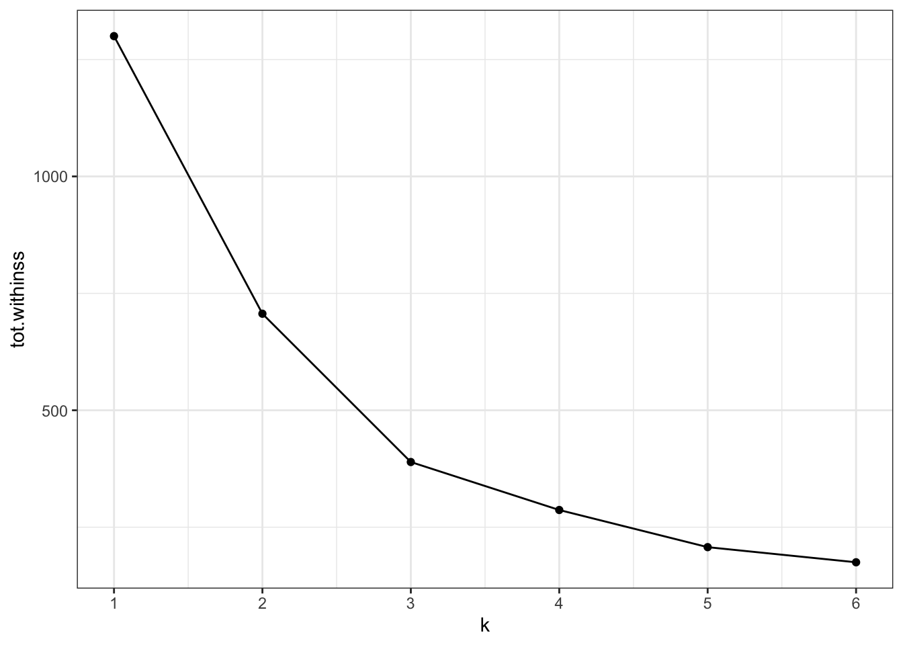

This is a method for grouping observations into clusters. It groups data based on similarity and is an often-used unsupervised machine learning algorithm.
It groups the data into a fixed number of clusters (\(k\)) and the ultimate aim is to discover patterns in the data.
K-means clustering is an iterative process. It follows the following steps:
Select the number of clusters to identify (e.g. K = 3)
Create centroids
Place centroids randomly in your data
Assign each data point to the closest centroid
Calculate the centroid of each new cluster
Repeat steps 4-5 until the clusters do not change
6.3 Data
Once again we’ll be using the data from data/penguins.csv. These data are from the palmerpenguins package (for more information, see the GitHub page).
Rows: 344 Columns: 8
── Column specification ────────────────────────────────────────────────────────
Delimiter: ","
chr (3): species, island, sex
dbl (5): bill_length_mm, bill_depth_mm, flipper_length_mm, body_mass_g, year
ℹ Use `spec()` to retrieve the full column specification for this data.
ℹ Specify the column types or set `show_col_types = FALSE` to quiet this message.
head(penguins)
# A tibble: 6 × 8
species island bill_length_mm bill_depth_mm flipper_length_mm body_mass_g
<chr> <chr> <dbl> <dbl> <dbl> <dbl>
1 Adelie Torgersen 39.1 18.7 181 3750
2 Adelie Torgersen 39.5 17.4 186 3800
3 Adelie Torgersen 40.3 18 195 3250
4 Adelie Torgersen NA NA NA NA
5 Adelie Torgersen 36.7 19.3 193 3450
6 Adelie Torgersen 39.3 20.6 190 3650
# ℹ 2 more variables: sex <chr>, year <dbl>
# load the datapenguins_py = pd.read_csv("data/penguins.csv")# inspect the datapenguins_py.head()
species island bill_length_mm ... body_mass_g sex year
0 Adelie Torgersen 39.1 ... 3750.0 male 2007
1 Adelie Torgersen 39.5 ... 3800.0 female 2007
2 Adelie Torgersen 40.3 ... 3250.0 female 2007
3 Adelie Torgersen NaN ... NaN NaN 2007
4 Adelie Torgersen 36.7 ... 3450.0 female 2007
[5 rows x 8 columns]
There are a variety of variables in this data set. The following example focuses on the two variables bill_length_mm and bill_depth_mm across the various species recorded.,
(ggplot(penguins_py, aes(x ="bill_depth_mm", y ="bill_length_mm", colour ="species")) + geom_point())

We can already see that the data appear to cluster quite closely by species. A great example to illustrate K-means clustering (you’d almost think I chose the example on purpose)!
6.5 Perform K-means clustering
To do the clustering, we’ll need to do a bit of data wrangling, since we can only do the clustering on numerical data.
As we did with the PCA, we also need to scale the data. Although it is not required in this case, because both variables have the same unit (millimetres), it is good practice. In other scenarios it could be that there are different units that are being compared, which could affect the clustering.
The initial centroids get randomly placed in the data. This, combined with the iterative nature of the process, means that the values that you will see are going to be slightly different from the values here. That’s normal!
# remove missing valuespenguins_py = penguins_py.dropna()# add an ID columnpenguins_py['id'] =range(1, len(penguins_py) +1)# add an ID column to the scaled data# so we can match the observationspenguins_scaled_py['id'] =range(1, len(penguins_scaled_py) +1)# merge the data by IDpenguins_augment_py = (pd.merge(penguins_py.dropna(), penguins_scaled_py, on ='id'))# add the cluster designationpenguins_augment_py['cluster'] = kmeans.fit_predict(penguins_scaled_py)# and convert it into a factorpenguins_augment_py['cluster'] = (penguins_augment_py['cluster'] .astype('category'))
In the example we set the number of clusters to 3. This made sense, because the data already visually separated in roughly three groups - one for each species.
However, it might be that the cluster number to choose is a lot less obvious. In that case it would be helpful to explore clustering your data into a range of clusters.
In short, we determine which values of \(k\) we want to explore and then loop through these values, repeating the workflow we looked at previously.
Reiterating over a range of \(k\) values is reasonably straightforward using tidyverse. Although we could write our own function to loop through these \(k\) values, tidyverse has a series of map() functions that can do this for you. More information on them here.
In short, the map() function spits out a list which contains the output. When we do this on our data, we can create a table that contains lists with all of the information that we need.
Here we calculate the following:
the kclust column contains a list with all the kmeans() output, for each value of \(k\)
the tidied column contains the information on a per-cluster basis
the glanced column contains single-row summary for each \(k\) - we’ll use the tot.withinss values a little bit later on
the augmented column contains the original data, augmented with the classification that was calculated by the kmeans() function
kclusts <-# check for k = 1 to 6tibble(k =1:6) %>%mutate(# perform clustering for each kkclust =map(k, ~kmeans(penguins_scaled, .x)),# summary at per-cluster leveltidied =map(kclust, tidy),# get single-row summaryglanced =map(kclust, glance),# add classification to data setaugmented =map(kclust, augment, penguins_scaled))kclusts
Lists can sometimes be a bit tricky to get your head around, so it’s worthwhile exploring the output. RStudio is particularly useful for this, since you can just left-click on the object in your Environment panel and look.
The way I see lists in this context is as containers. We have one huge table kclusts that contains all of the information that we need. Each ‘cell’ in this table has a container with the relevant data. The kclust column is a list with kmeans objects (the output of our kmeans() for each of the \(k\) values), whereas the other columns are lists of tibbles (because the tidy(), glance() and augment() functions output a tibble with the information for each value of \(k\)).
For us to use the data in the lists, it makes sense to extract them on a column-by-column basis. We’re ignoring the kclust column, because we don’t need the actual kmeans() output any more.
To extract the data from the lists we use the unnest() function.
Next, we can visualise some of the data. We’ll start by plotting the scaled data and colouring the data points based on the final cluster it has been assigned to by the kmeans() function.
The (augmented) data are in assignments. Have a look at the structure of the table.
We facet the data by \(k\), so we get a single panel for each value of \(k\).
We also add the calculated cluster centres, which are stored in clusters.
Looking at this plot shows what we already knew (if only things were this easy all the time!): three clusters is a pretty good choice for these data. Remember that you’re looking for clusters that are distinct, i.e. are separated from one another. For example, using k = 4 gives you four nice groups, but two of them are directly adjacent, suggesting that they would do equally well in a single cluster.
6.6.1 Elbow plot
Visualising the data like this can be helpful but at the same time it can also be a bit subjective (hoorah!). To find another subjective way of interpreting these clusters (remember, statistics isn’t this YES/NO magic mushroom and we should be comfortable wandering around in the murky grey areas of statistics by now), we can plot the total within-cluster variation for each value of k.
Intuitively, if you keep adding clusters then the total amount of variation that can be explained by these clusters will increase. The most extreme case would be where each data point is its own cluster and we can then explain all of the variation in the data.
Of course that is not a very sensible approach - hence us balancing the number of clusters against how much variation they can capture.
A practical approach to this is creating an “elbow” plot where the cumulative amount of variation explained is plotted against the number of clusters.
The output of the kmeans() function includes tot.withinss - this is the total within-cluster sum of squares.
ggplot(clusterings,aes(x = k, # for each k plot...y = tot.withinss)) +# total within variancegeom_line() +geom_point() +scale_x_continuous(breaks =seq(1, 6, 1)) # set the x-axis breaks

We can see that the total within-cluster sum of squares decreases as the number of clusters increases. We can also see that from k = 3 onwards the slope of the line becomes much shallower. This “elbow” or bending point is a useful gauge to find the optimum number of clusters.
From the exploration we can see that three clusters are optimal in this scenario.
6.7 Exercises
6.7.1 Finch beaks
Exercise
Level:
For this exercise we’ll be using the data from data/finch_beaks.csv.
The finches data has been adapted from the accompanying website to 40 years of evolution. Darwin’s finches on Daphne Major Island by Peter R. Grant and Rosemary B. Grant.
Practice running through the clustering workflow using the finches dataset. Try doing the following:
kclusts <-# check for k = 1 to 6tibble(k =1:6) %>%mutate(# perform clustering for each kkclust =map(k, ~kmeans(finches_scaled, .x)),# summary at per-cluster leveltidied =map(kclust, tidy),# get single-row summaryglanced =map(kclust, glance),# add classification to data setaugmented =map(kclust, augment, finches_scaled) )
ggplot(clusterings,aes(x = k, # for each k plot...y = tot.withinss)) +# total within variancegeom_line() +geom_point() +scale_x_continuous(breaks =seq(1, 6, 1)) # set the x-axis breaks

Conclusions
Our initial clustering was done using two clusters, basically capturing the two different finch species.
Redoing the analysis with different numbers of clusters seems to reasonably support that decision. The elbow plot suggests that k = 3 would not be such a terrible idea either.
In the example above we used data that were collected at two different time points: 1975 and 2012.
In the analysis we’ve kept these data together. However, the original premises of these data was to see if there is any indication of evolution going on in these species of finches. Think about how you would approach this question!
6.8 Summary
Key points
k-means clustering partitions data into clusters
the k defines the number of clusters
cluster centers or centroids get assigned randomly
each data point gets assigned to the closest centroid
the centroid of the new clusters gets calculated and the process of assignment and recalculation repeats until the cluster do no longer change
the optimal number of clusters can be determined with an ‘elbow’ plot